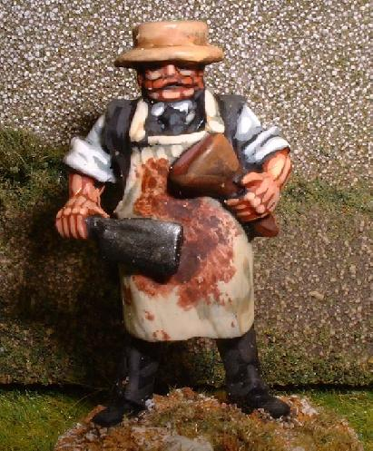

This unremarkable gated-off driveway is the only thing visible of Woollyburger Cemetery on the highway. Woollyburger (real name: Little Pennsylvania Cemetery) sits alongside Big Darby Creek just west of the town of Darbydale, not far from Route 665. To visit it you have to pull over onto the wide shoulder of 665 and walk past the gate and into the woods. Eventually the path widens into a clearing where a fence marks the boundary of the cemetery itself.
Burials started here in about 1834 and have continued, on rare occasions, ever since. The graveyard consists mainly of family plots--the Bradfields, the Hambletons, the Hays, the Spanglers. Some of the first families to settle in the Darbydale-Big Darby area of Franklin County are buried here almost to a member, including a number of stillbirths and infant deaths.
The family plot layout may explain one of the oddest features of the graveyard: the concrete foundations that surround groups of gravestones. It might also have something to do with the fairly steep hill that the cemetery climbs; the incline becomes more pronounced toward the back.

Woollyburger has been the victim of a depressing amount of vandalism, owing mostly to its remote location. No one lives very close to this spot, and the police can only check on it so often, so anyone inclined to destroy headstones can do so with impunity. More than a few broken stones are stacked in the rear corners of the cemetery lot.
Plenty of the damaged tombstones have been replaced, however, and many of them belong to veterans of every American war. One new-looking stone at the back of the cemetery marks the grave of Elijah Athey (1839-1930) and his wife Wilhelmina (1843-1927); according to the stone, Elijah "Marched with Sherman to the Sea." It's fascinating to know that the guy buried here took part directly in history--that he actually participated in the campaign that burned Atlanta and broke the back of the Confederacy, then lived for sixty-five years after that.
But it's not really the history that brings most people to Woollyburger Cemetery; it's the legends. Ghosts supposedly appear here. Furthermore, it's long been famous as a place haunted by dangerous living people, from Klansmen carrying out lynchings, to murderous hunters, to cult members performing sacrificial rites. There are even legends about a Bigfoot-like creature called the Woollyburger who lives in the Big Darby watershed area and mutilates unlucky cemetery visitors.
While the truth about things like this is always difficult to figure out, a few helpful e-mails and contact with some Darbydale residents have enabled me to piece together a few of the details.
First of all, the Bigfoot stories came from nothing more than the funny-sounding name. People have been calling boogeymen "woollyboogers" for a long time. But where did the name come from?
The Story of Willy Butcher

The Willy Butcher house stood for many years on London-Groveport Road just across from the driveway to Little Pennsylvania Cemetery. Abandoned for as long as anybody could remember and creepy as hell, the old house had its own set of legends. It had supposedly been home to Willy Butcher and his family--up until Willy went crazy with a knife and lived up to his name, butchering his wife and children, then taking his own life. After that, Willy's malevolent spirit was known to haunt the house, making it a notorious hangout for Darbydale teenagers looking for a scare.
The Willy Butcher legend was so entrenched in the area that even when the house burned down, people continued to talk about the ghosts. The creepy graveyard across 665 (the final resting place of the murdered family, in some versions) became informally known as Willy Butcher Cemetery, and most of the ghost stories once told about a haunted house were adapted for a haunted graveyard. Over the years the name got mixed up and the origins of the story were mostly lost, but people continued to swap ghost legends about the isolated stretch of wooded highway around the creek. The name of the family was even twisted from Boucher; in real life, Willy was a son who died young.
The Klan/cult stories probably came about because hunters do sometimes hang out in the graveyard after dark. The woods around the Big Darby are very popular during deer season--London-Groveport Road is always lined with their SUVs--so it's not hard to imagine hunters using the graveyard as a place to drink. The glowing tips of their cigarettes and the sound of their voices have inspired stories about Klan meetings and cult rituals in Woollyburger.
Still, it's probably a good idea to reserve judgment and see for yourself if anything strange happens at Woollyburger Cemetery. I've made several trips there myself, day and night, but haven't encountered anything out of the ordinary. If you have, or if you know anything else about the evolution of the legend, please send me an e-mail and let me know.
Grave Addiction: Woollyburger Cemetery
Rootsweb: Little Pennsylvania Cemetery
Ghosts of Ohio: "Woollybooger" Cemetery
Back
forgottenohio@yahoo.com